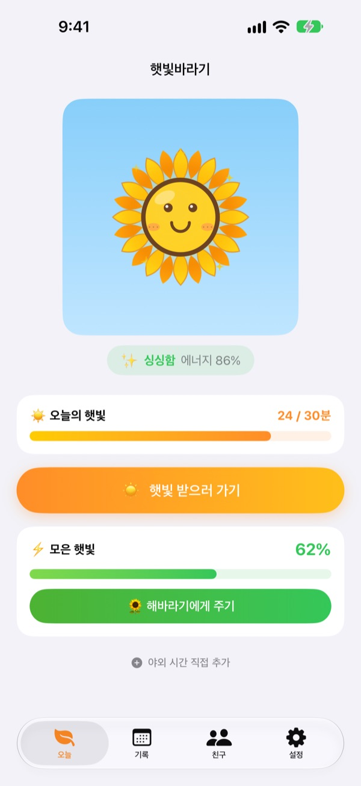
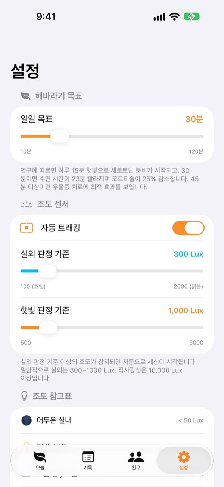
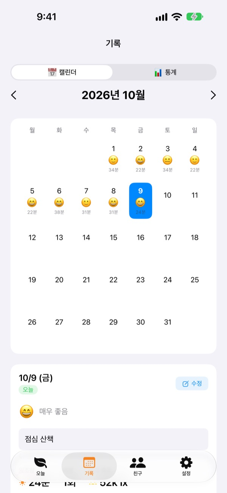
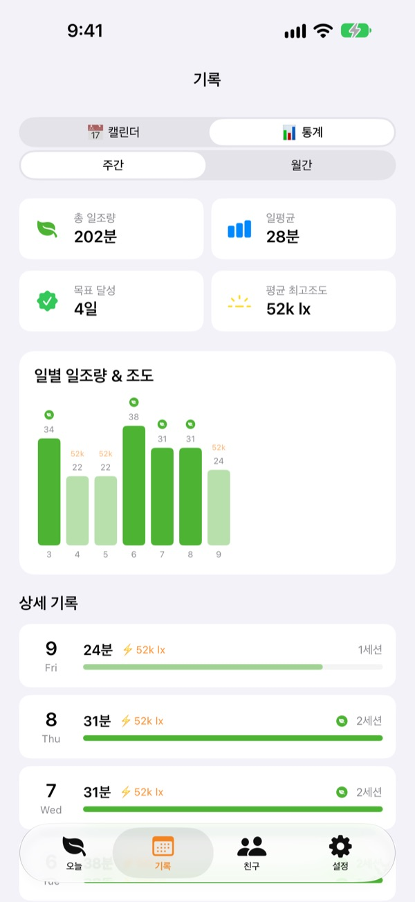

오늘 받은 햇빛으로
해바라기를 키워요
밖에 나가면 햇빛을 받은 시간이 알아서 쌓여요. 모은 햇빛을 해바라기에게 주면 싱싱해지고, 며칠 잊으면 시들어요.
모든 기능이 무료예요. 기록은 기기 안에만 저장돼요.

직접 햇빛을 모아 보세요
밝기와 시간을 골라 햇빛을 받은 뒤, 시들어 가는 해바라기에게 주세요.
오늘 햇빛, 몇 분이나 받았나요?
출근길 몇 걸음, 점심 먹으러 나간 잠깐. 하루 종일 실내에 있으면 햇빛을 거의 못 받았다는 걸 저녁에야 알아요. 햇빛바라기는 밖에서 보낸 시간을 숫자로 보여 주고, 해바라기가 내일도 나가자고 기다려요.
밖에 나가면 알아서 재요
햇빛 받으러 가기를 누르고 밖으로 나가면 전면 카메라의 노출 정보로 주변 밝기를 재요. 바깥만큼 밝은 빛이 30초쯤 이어지면 기록이 시작되고, 사진은 찍지도 저장하지도 않아요.
기록이 시작된 뒤에는 2분마다 20초씩만 센서를 켜서 배터리를 아껴요.

날마다 햇빛과 기분을 남겨요
캘린더에서 날짜마다 햇빛 시간과 기분 이모지, 한마디를 남겨요. 밖에 있었는데 재지 못한 시간은 야외 시간 직접 추가로 5분부터 120분까지 더할 수 있어요.

한 주, 한 달의 흐름이 보여요
주간과 월간 통계로 목표를 채운 날과 평균 햇빛 시간을 살펴봐요. 하루 목표는 10분부터 120분까지 정하고, 오늘 몇 분을 더 받으면 되는지 첫 화면에서 바로 확인해요.
홈 화면과 잠금 화면 위젯, 다이나믹 아일랜드에서도 오늘의 햇빛과 해바라기 상태가 보여요.

시작은 세 단계면 돼요
- 1
하루 목표를 정해요
기본은 30분이에요. 설정에서 10분부터 120분까지 바꿀 수 있어요.
- 2
햇빛 받으러 나가요
햇빛 받으러 가기를 누르고 앱을 연 채로 밖에 나가요. 카메라 권한은 처음 한 번만 물어요. - 3
해바라기에게 줘요
모은 햇빛을
해바라기에게 주기로 전해 주면 에너지가 차올라요.
밝기에 따라 이렇게 쌓여요
- 300 Lux 미만
- 약한 빛: 햇빛 시간으로 치지 않아요
- 300~1,000 Lux
- 실외/흐림: 10분에 1~3%
- 1,000~10,000 Lux
- 햇빛: 10분에 3~33%
- 10,000 Lux 이상
- 강한 햇빛: 10분에 33% 넘게
- 모은 햇빛
- 받은 분 × 평균 밝기 ÷ 3,000 (한 번에 최대 100%)
- 해바라기 에너지
- 한 시간에 2.5%씩, 하루에 60%쯤 줄어요
실외 판정 기준은 설정에서 100~2,000 Lux 사이로 바꿀 수 있어요. 기본은 300 Lux예요.
자주 묻는 질문
햇빛은 어떻게 재나요?
전면 카메라의 노출 정보로 주변 밝기(조도)를 짐작해요. 바깥만큼 밝은 빛이 잠깐 이어지면 기록이 저절로 시작돼요. 사진이 찍히거나 저장되는 일은 없어요.
재는 동안 배터리를 많이 쓰지 않나요?
햇빛이 확인되면 센서를 계속 켜 두지 않고 2분마다 20초쯤만 켜서 다시 재요. 나머지 시간은 타이머로만 기록해서 배터리를 아껴요.
해바라기가 자꾸 시들어요.
해바라기는 한 시간에 2.5%씩 에너지를 잃어요. 햇빛을 받아 모은 뒤 해바라기에게 주기로 전해 주세요. 맑은 날 햇볕 아래에서 15~20분 받으면 하루 동안 줄어든 만큼을 채울 수 있어요.
밖에 있었는데 기록이 안 됐어요.
첫 화면 아래의 야외 시간 직접 추가로 5분부터 120분까지 더할 수 있어요. 흐린 날 기록이 잘 시작되지 않으면 설정의 실외 판정 기준을 낮춰 보세요.
친구 기능은 어떻게 쓰나요?
친구와 가까이에서(10m 안쪽) 둘 다 햇빛을 재고 있으면 저절로 연결돼요. 처음 만나는 사람과는 같이 받기를 확인한 뒤에만 연결되고, 그 뒤로는 자동이에요. 함께 받으면 꽃잎이 알록달록 물들었다가 3일에 걸쳐 원래 색으로 돌아오고, 친구 탭에 기록이 쌓여요. 두 사람 모두 앱이 있어야 하고 블루투스와 로컬 네트워크 권한이 필요해요.
정말 무료인가요?
네. 광고도 결제도 없이 모든 기능을 쓸 수 있어요. 마음에 들면 앱 안에서 팁을 남길 수 있지만, 팁을 남겨도 기능은 똑같아요.
기록을 백업하거나 옮길 수 있나요?
기록은 서버 없이 기기 안에만 저장되고, 최근 90일 기록을 보관해요. 따로 백업하는 기능은 없지만 iCloud나 컴퓨터로 하는 아이폰 백업에는 함께 들어가요.
기록을 전부 지우고 싶어요.
앱의 설정 > 데이터 > 데이터 초기화를 누르거나 앱을 지우면 모든 기록이 사라져요. 되돌릴 수 없으니 주의해 주세요.
버그는 어디로 알리면 되나요?
아래 메일이나 GitHub 이슈(github.com/M1zz/SunlightTracker/issues)로 보내 주세요. 기기 모델, iOS 버전, 문제가 생긴 상황을 함께 적어 주시면 큰 도움이 돼요. 보통 며칠 안에 답장드려요.
궁금한 점이나 의견은 leeo@kakao.com로 보내 주세요.